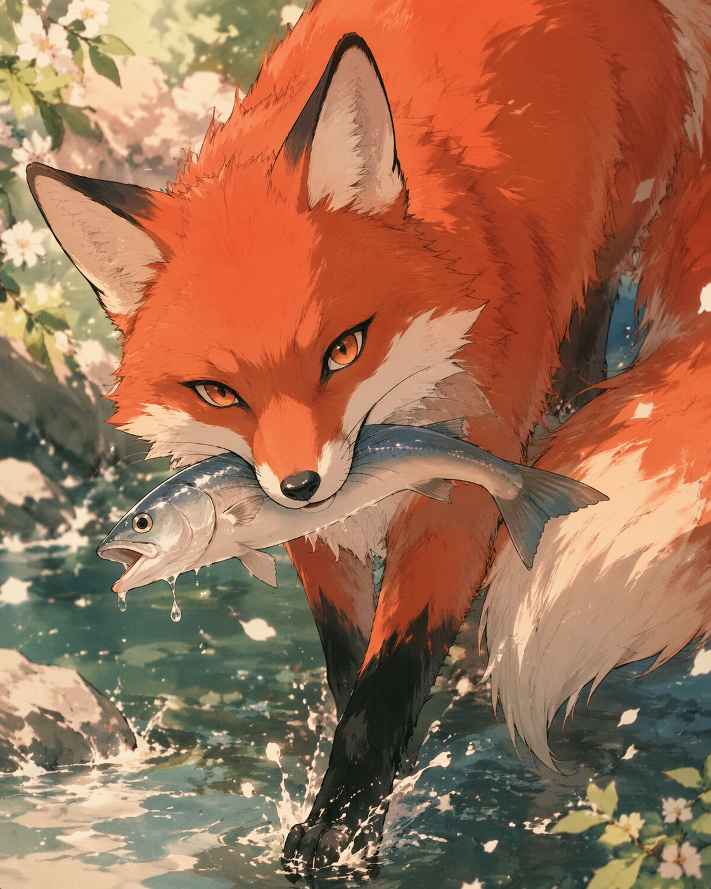

有些故事开始的时候并不轰烈。
它只是悄悄发生，像夏夜里一阵忽然穿堂而过的风——起初并不惊人，却在很久以后，才让人意识到，原来自己曾经那样真切地，被吹拂过。
咸鱼和狐狸的故事，就是这样开始的。
那时一切都还轻。
消息是轻的，试探是轻的，心动也是轻的。像傍晚六点的光线，不刺眼，也不暗淡，刚好够照见两个人走近的路。
他们在日常里慢慢靠拢，在一句句不起眼的话里，把对方放进了自己的生活。没有谁真正准备好，也没有谁真的明白，所谓亲密关系，原来不是一句“在一起”就能学会的事。
咸鱼以为，爱应该慢慢来。
先认识，先理解，先看清彼此，再决定要不要把自己交出去。他把爱当成一种审慎的抵达——要一步一步走，要走稳，要走对。
可狐狸不是那样的人。
她不喜欢悬而未决，不喜欢被搁置在暧昧和迟疑之间。她更像一团清醒的火，宁可灼痛，也不要温热。她要的是确定，是此刻，是“你到底要不要我”。
于是这段关系开始得比咸鱼预想中快得多。快得像一句还没来得及想清楚的话，就已经被说出口了。
但那并不妨碍最初的美好是真的。
最开始的那些日子，有一种年轻的、柔软的、尚未被现实和误解弄脏的光。他们聊天，分享学习、生活、技术、审美、疲惫和琐碎；会在平常的日子里，突然因为一句话靠近一点；会在各自的世界门口回头，看见对方正站在那里。
那时候的狐狸，是鲜活的。
她会逞强，也会脆弱；会有一点骄傲，也会在亲密里露出柔软的一面。她想被爱，也愿意去爱。她会轻轻说出一些看似随口的话，像一片羽毛落下来，没有声响，却其实有重量。
她说，你要好好珍惜我。
那时的咸鱼没有听懂。
他以为那不过是恋人间自然的撒娇，是一句可以被风吹过去的话。他不知道，很多关系真正的转折，从来不是吵得最凶的那一次，而是那些说得很轻、却没被听见的话。
“你要好好珍惜我。”
那不是一句可爱的提醒。那是一道微弱得几乎看不见的求救信号。那里面藏着的不是任性，而是一个人把自己轻轻递过来的方式——
我已经走到你身边了。你会不会看见我。
咸鱼不是不会爱。
恰恰相反，他是一个很会把爱埋进生活细节里的人。他会记得，会心疼，会愿意帮忙，会想办法，会陪着。在他的理解里，爱更像一种行动：是照顾，是在场，是身体不舒服时的一句关心，是事情来临时下意识地承担一点。
可狐狸想要的爱，不止于此。
她想要的是被看见——是她还没说出口，你就能觉察到不对。是她说“我累了”的时候，你先听见她的累，而不是先想怎么解决。是她难过的时候，你不是站在对面分析她，而是站到她身边，陪她一起朝那片难过看一眼。
咸鱼的爱是真的，狐狸的需求也是真的。
只是很多时候，真的和真的，并不会自动相遇。
于是他们开始错过彼此。
不是那种擦肩而过的错过，而是一种更缓慢、更安静、也更残忍的错过——明明在同一段关系里，明明彼此都在用力，可一个人给出的，始终不是另一个人最需要的。
狐狸说自己累。咸鱼想的是怎么让她好一些。
狐狸说自己烦。咸鱼想的是问题出在哪里。
狐狸说自己不想说话。咸鱼想的是要不要换个地方、做点别的事、让她开心起来。
咸鱼一直都在回应。
可很多时候，他回应的是事情，不是情绪；是表层，不是深处；是“我该做什么”，而不是“我先来懂你”。
于是狐狸开始越来越用力地说。
她解释。她委屈。她试着一遍一遍把自己的感受摊开来，让对方看见。她说这段关系好像只有她一个人在经营。她说他把她当成了免费的心理咨询师。她说每次聊完她都很难受。
她并不是故意把话说重。
很多时候，一个人把话说重，不是因为她刻薄，而是因为她已经轻轻地说过很多次了。
而咸鱼，总是在慢半拍的地方。
他不是不真诚，也不是不想改。他只是太容易在情绪变得浓稠的时候慌张。一慌，他就想解释——解释自己不是那个意思，解释自己真的很忙，解释自己其实也很在意。
如果再慌一点，他就会沉默。
像一只缩起脖子的鸵鸟，把头埋进沙里，希望风暴会自己过去。
可关系里的风暴，从来不会因为沉默就自动平息。它只会在沉默里慢慢沉到底，变成另一种东西——
变成失望，变成疲惫，变成“算了”，变成“不想再说了”，变成一个人终于不再期待自己会被懂得。
到那时候，关系会忽然安静下来。
那是一种很容易被误认的安静。
看起来，好像不怎么吵了。好像很多以前会爆炸的事，现在也只是轻轻过去。好像彼此都学会了体谅，学会了磨合，学会了不再和对方较劲。
咸鱼也曾这样以为。他以为那是成熟，是适应，是关系终于学会了平稳着陆。
可后来他才懂得，那不一定是磨合。
很多时候，那只是一个人不再想争了。
不是问题消失了。而是她已经懒得再解释，懒得再期待，懒得再把自己的伤口翻出来，等另一个人来辨认。
于是狐狸开始撤退。
她并不是突然冷掉的。她还是会回复，还是会聊天，还是会把自己留在这段关系里一段时间。可她心里已经有一部分，慢慢收回去了。
不是不爱了。而是她终于开始明白：继续伸手，可能只会让自己更疼。
这世上最令人难过的撤退，不是摔门而去，不是大吵一架，而是一个人还站在那里，还在说话，还在笑，可心已经一点一点从关系里退出来了。
直到有一天，分手终于发生。
说到底，真正结束一段关系的，不是某一句重话，也不是某一次争吵。它更像是冬天把一片湖冻住的过程——没有哪个瞬间特别惊人。只是一天比一天冷，薄冰一点一点铺开，等到有人终于低头看见脚下的时候，整片水面都已经硬了。
咸鱼在失去之后，第一次真正看见了自己的爱。
那种感觉像什么呢？
像一个人走进退潮后的海边，才忽然发现，原来海曾经来过这么深。以前爱在日常里，是背景，是空气，是默认存在的东西；分开以后，爱从背景里整个浮现出来，像伤口一样有形，像潮水一样漫上来。
他这才知道，原来自己并不是没有情感。原来自己不是那种注定只能孤独往前走的人。原来自己真的曾经那么认真地，把一个人放进了生活的深处。
只是，他知道得太晚了。
于是他写信。
写很长很长的信。写他们是怎样开始的，怎样靠近的，怎样一点一点变得沉重的；写自己从小到大的经历，写家庭，写孤独，写那些塑造了自己性格的隐秘底色；写自己怎样迟钝，怎样笨拙，怎样用自己的方式爱一个人，却没有学会用对方能接收到的方式去爱；写那些自己后来才明白的事——她的失眠，她的委屈，她说“珍惜我”的时候真正想说的东西，她为什么越来越沉默，为什么不再愿意继续聊下去。
那封信是真诚的。像一个人把胸腔一点点剖开，露出里面所有迟到的觉悟、愧疚和理解。里面有咸鱼迟迟才长出的爱，也有咸鱼终于学会承认的疼。
可狐狸没有收下那封信。
或者说，她已经不愿意再进入那封信中的阴雨天了。
她说，为什么要找她谈心呢。她不想再当免费的咨询师。每次聊完，她都很难受。既然不合适，那么大家就各自去过各自的人生。
那段回复很短。短得几乎没有修辞。可也正因为短，它像一把很薄的刀，准确地落在了最真相的地方。
狐狸拒绝的，不只是见面。她拒绝的是再一次进入那种——她表达，你解释；她受伤，你后知后觉；她消耗，你终于开始理解——的循环。她不是不懂咸鱼，也不是没有被他的真诚打动过。她只是已经太累了。
有时候，人拒绝的不是另一个人，而是和那个人在一起时，自己不断受伤的那种感觉。
后来，咸鱼才一点点明白：
有些关系，最伤人的并不是不爱，而是彼此都爱着，却没有能力把这份爱变成对方真正需要的样子。
狐狸要的是被看见、被优先、被稳稳接住。咸鱼给的是陪伴、帮忙、照顾和迟到的深情。
狐狸一直在试着让他懂。咸鱼一直在努力，可总是晚一点。
于是，一切就错开了。
他们不是没有过好的时候。他们明明也曾拥有那些具体而微的幸福：一起聊天，一起走路，一起吃饭，一起在平常的生活里互相看见；也曾有过亲吻，有过不舍，有过那种“这个人真的进入了我的生活”的真实感。
只是那些幸福，没有撑过后来越来越重的误解和越来越疲惫的沟通。
如果一定要给咸鱼与狐狸的故事写一个结尾，那它不该只是遗憾。
它更像是一场年轻时必经的大雨。淋的时候很狼狈，很冷，很疼。可很多年以后再回头看，你会知道，正是那场雨，让一个原本以为自己不会爱的人，第一次真正学会了：
什么叫心碎，什么叫珍惜，什么叫爱，以及——
什么叫来不及。
很多年以后，如果咸鱼再想起狐狸，他大概不会再只想起那些争吵。
他会想起一个穿白裙子的女孩，想起她的聪明、她的倔强、她偶尔露出来的脆弱，也会想起她曾经轻轻地说：
你要好好珍惜我。
那时他不懂。
后来终于懂了，却已经没有机会再回答。
可也正是因为失去过，咸鱼才真正知道了爱的形状。不是“我以为”，不是“我觉得我已经做得够多”，而是——
当另一个人站在你面前，用她全部的敏感、期待、委屈和真心靠近你的时候，你要如何去听，如何去抱，如何让她知道：
她不是一个人。
这段关系最终没有留下圆满。它留下的是别的东西——
留下了一种迟到的理解，留下了一种成长时必经的疼，留下了一种以后再遇到爱时，不会再那么无知的能力。
有些风，吹过就散了。
可那个被风吹过的夏天，会一直留在皮肤的记忆里。
咸鱼后来常常想，如果当初在那个瞬间——她说“你要好好珍惜我”的那个瞬间——他放下手里的一切，认真地看着她，说一句“我会的”，然后真的做到，一切会不会不一样。
他不知道答案。
他只知道，有些人来到你的生命里，不是为了留下，而是为了让你在失去之后，终于长出一个更完整的自己。
而狐狸呢？
狐狸大概早就往前走了。她会遇到一个不需要她一遍一遍解释的人，一个在她还没开口的时候就握住她手的人，一个不会让她把话说成刀子的人。
咸鱼真心希望如此。
因为爱过一个人，最后能做的，有时候不是留住她，而是终于学会，祝福她。
然后带着她教会你的那些东西，去爱下一个春天。